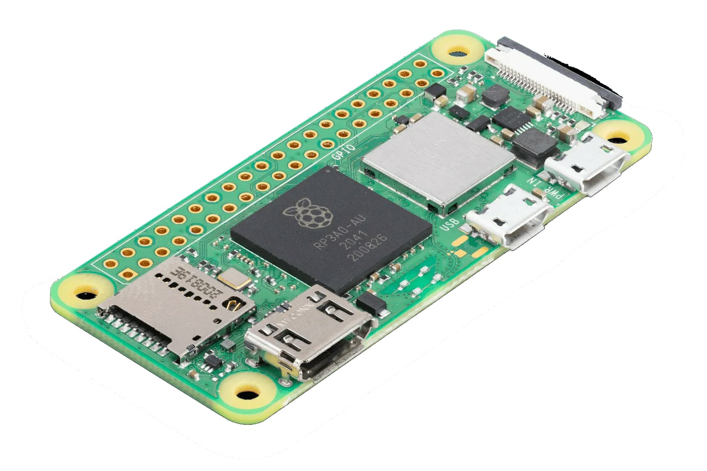
Raspberry Pi Zero 2 W
1 GHz quad-core ARM Cortex-A53, 512 MB RAM, Wi-Fi and a 40-pin GPIO header. Runs control logic and the video stream.
[ Senior Design Project · CSE499B · NSU ]
An autonomous rover with a camera-guided robotic arm. Say the word — it finds the object, picks it up, and brings it back to where it started.
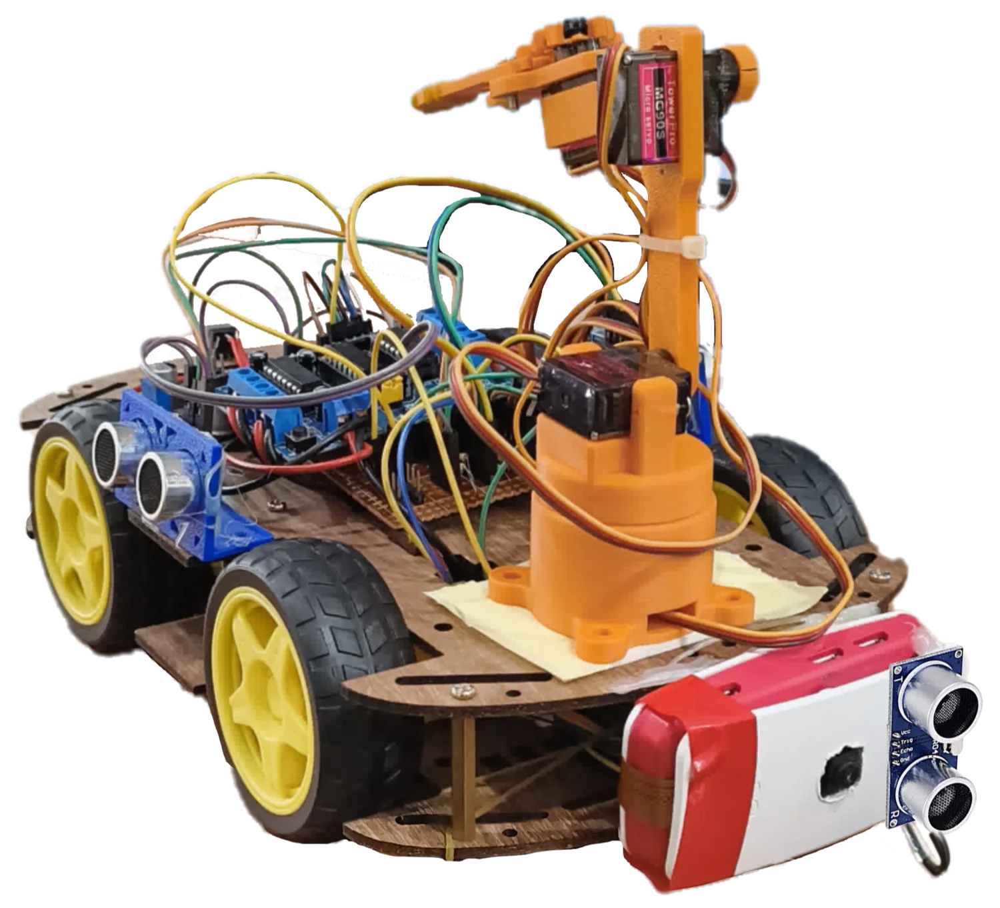
[ TARS · Raspberry Pi Zero 2 W · 4-DoF arm · HC-SR04 ]
Autonomous retrieval, on a low-cost embedded platform.
Autonomous object retrieval has real value in logistics, healthcare and assistive robotics — but most systems either live in simulation or need heavy hardware. TARS combines a car-like mobile base, a camera-equipped 4-DoF arm and a lightweight deep-learning detector into one closed-loop system that runs on a Raspberry Pi Zero 2 W.
The user issues a command — “start”, “stop”, or the name of an object — from a web interface. The rover scans its surroundings, identifies the target, aligns to it, drives up to about 10 cm, uses inverse kinematics to pick it up, then returns to its starting point and puts it down.
If the video doesn’t load here, open it directly on Google Drive.
Open video ↗Everything fits on one compact chassis.
The Raspberry Pi Zero 2 W is the single onboard brain: it reads the camera and distance sensor and drives the motors and servos. Motors get their own battery pack, separate from the Pi’s power bank.

1 GHz quad-core ARM Cortex-A53, 512 MB RAM, Wi-Fi and a 40-pin GPIO header. Runs control logic and the video stream.
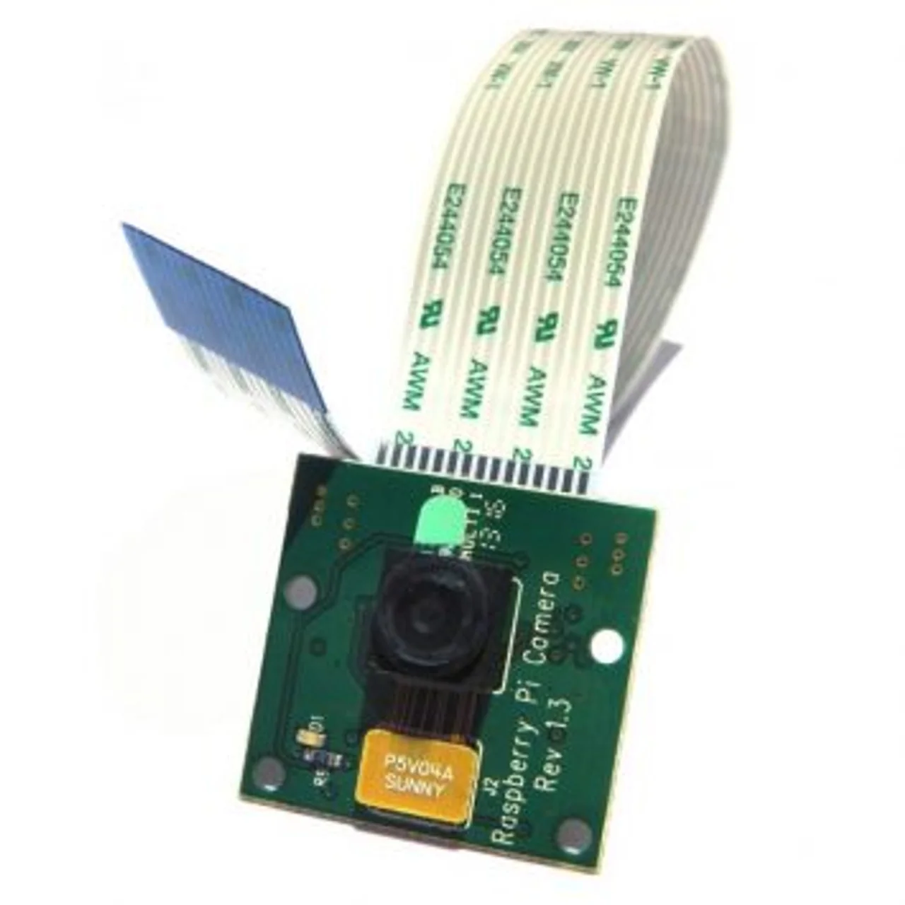
5 MP module on the CSI port. Feeds the live frames used for object detection and scanning.
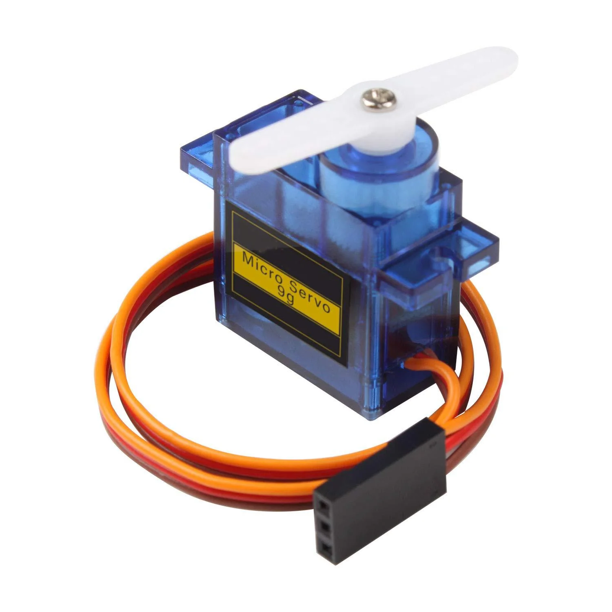
One per joint of the 4-DoF arm. 180° rotation, 2.0–2.2 kg/cm torque, about 9–10.5 g each.
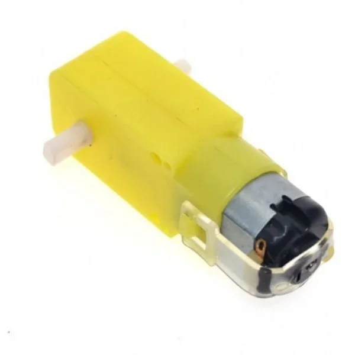
1:48 gearing, ≈208 RPM at 5 V. Move the four-wheel base.
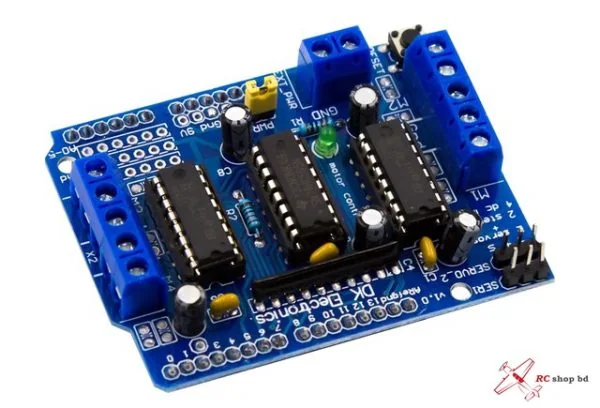
Four-channel driver that simplifies speed and direction control of the DC motors.
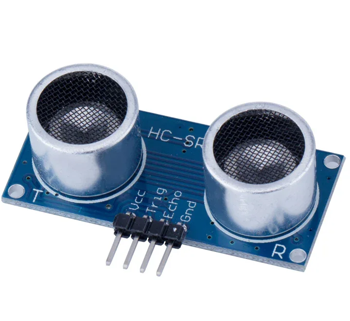
2–400 cm range. Tells the rover when it’s about 10 cm from the target.
5000 mAh power bank (5 V) for the Pi · three 18650 Li-ion cells (3.7 V, 3000 mAh) for the motors and servos.
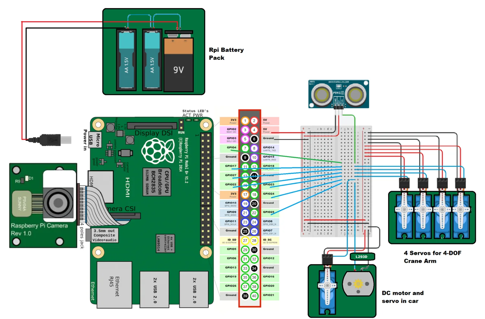
A closed loop from command to delivery.
Press Start Detection in the web interface and pick a target: paper ball, cup or eraser.
The rover rotates through repeated 360° scans until YOLOv5s spots the target, then lines up with it.
It drives forward until the HC-SR04 reads about 10 cm — within the arm’s grasping range.
Inverse kinematics computes the servo angles that swing the arm down and the claw closes on the object.
Holding the object, the rover drives back to its starting point and puts it down. A stop command can halt everything at any time.
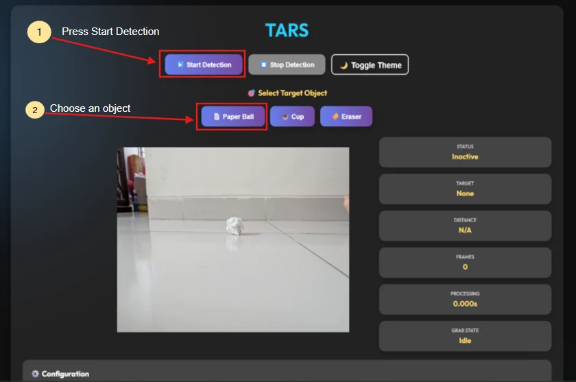
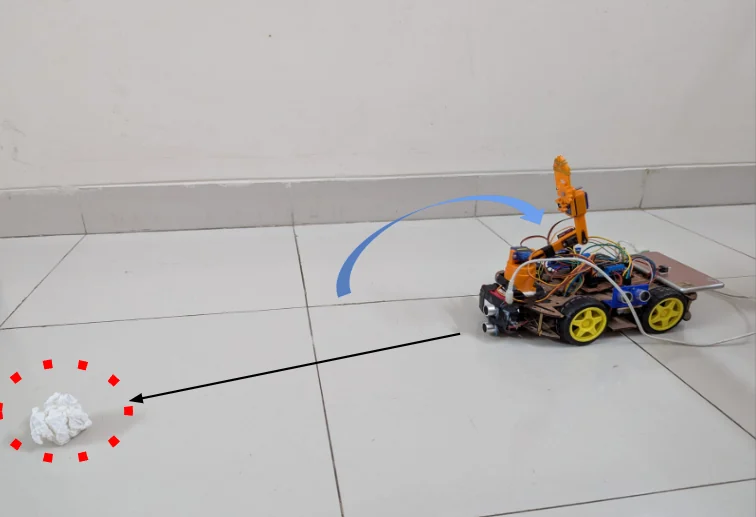
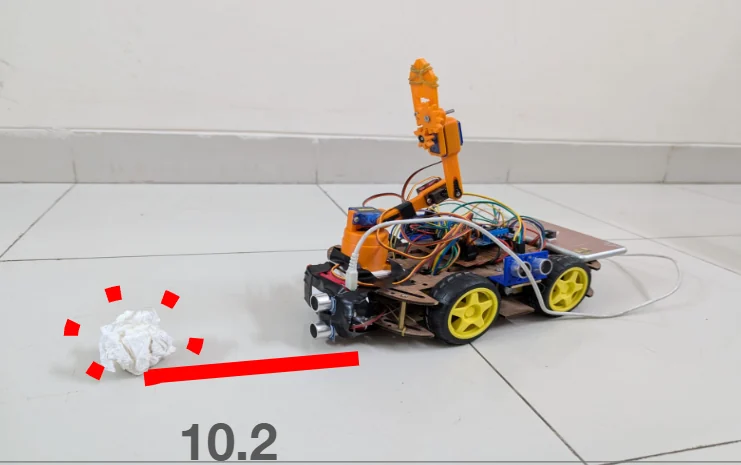
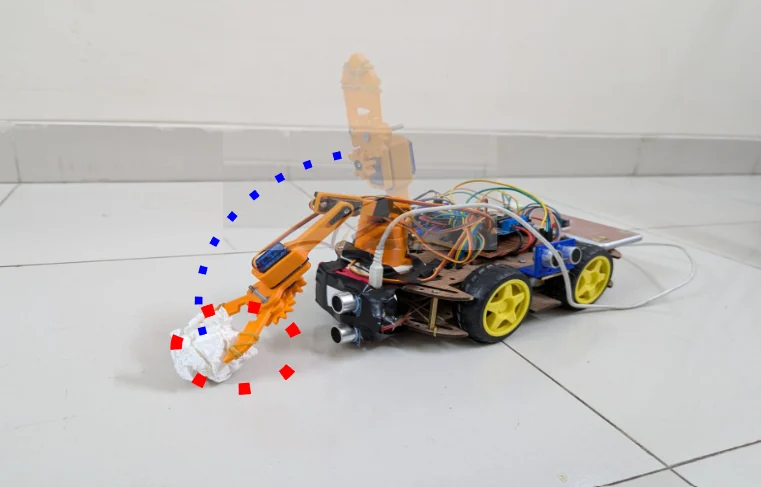
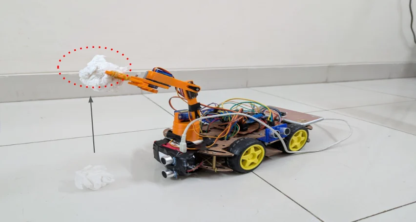
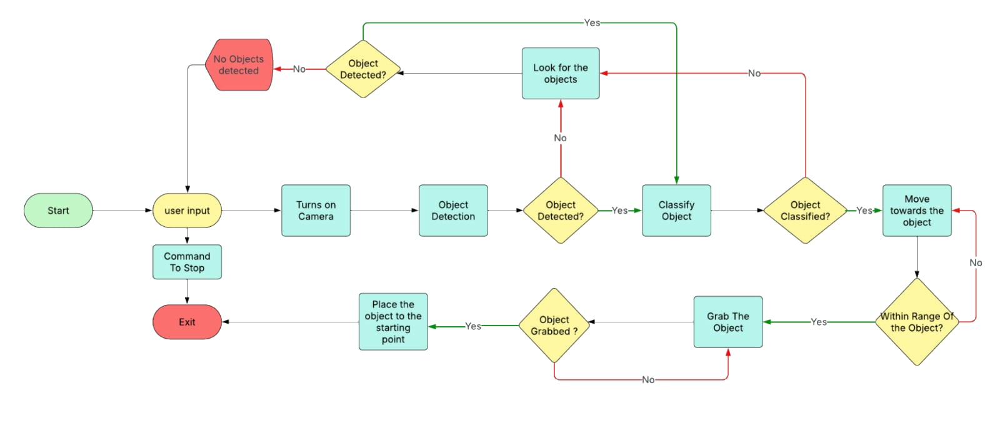
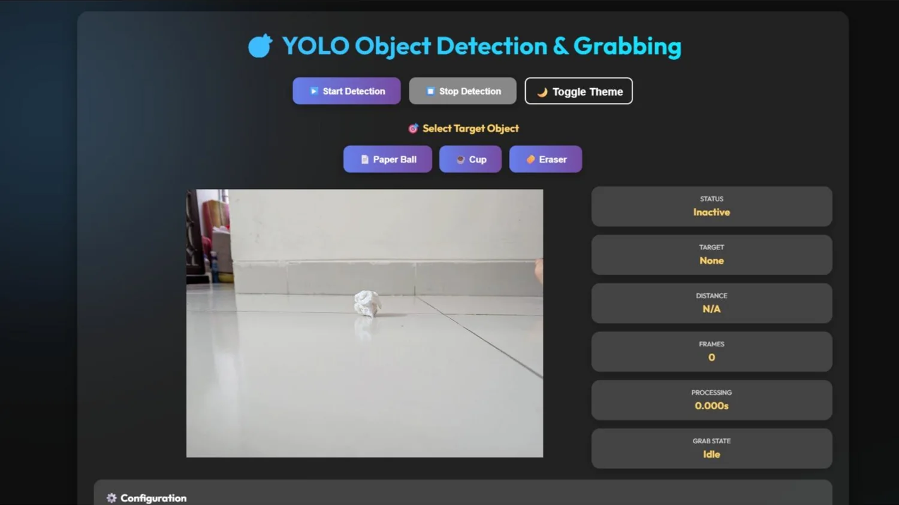
A detector that’s fast enough for a Pi and accurate enough to trust.
YOLOv5s was trained for 25 epochs on 3000+ labeled 640×640 images (70:20:10 split) of a paper ball, an eraser and a paper cup, with heavy augmentation and a background class so look-alike objects aren’t mistaken for targets. Evaluated on 100 images with 149 labels.
| Class | Labels | Precision | Recall | mAP@0.5 | mAP@0.5:0.95 |
|---|---|---|---|---|---|
| All | 149 | 0.970 | 0.922 | 0.978 | 0.680 |
| Cup | 22 | 0.978 | 0.955 | 0.992 | 0.742 |
| Eraser | 52 | 1.000 | 0.826 | 0.953 | 0.575 |
| Paper ball | 75 | 0.933 | 0.987 | 0.991 | 0.724 |
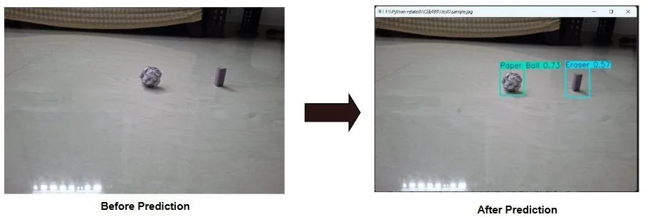
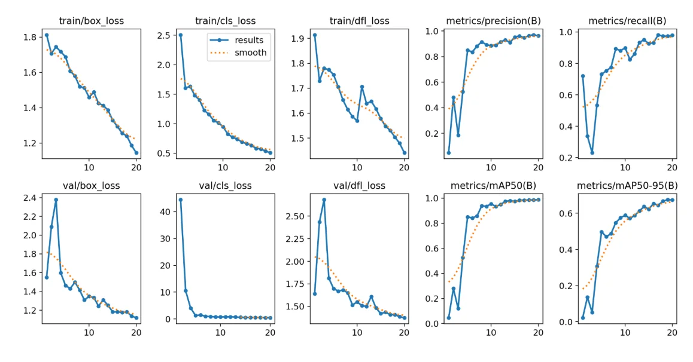
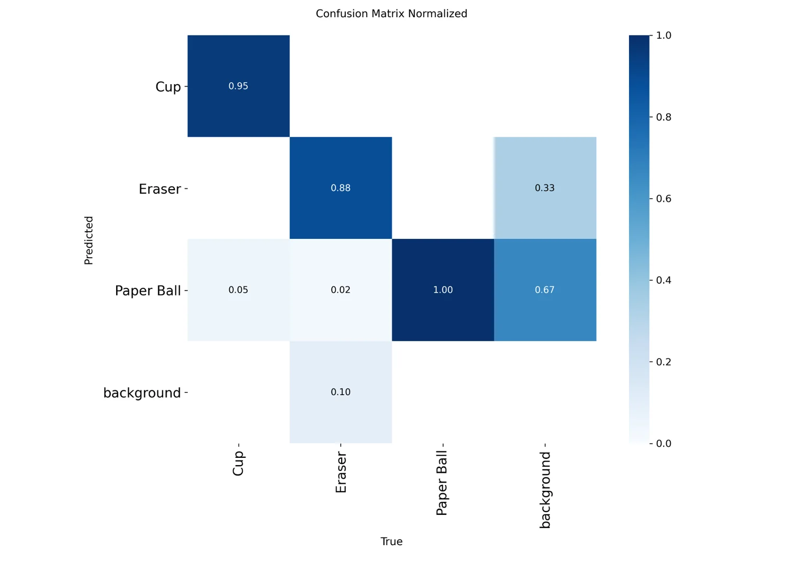
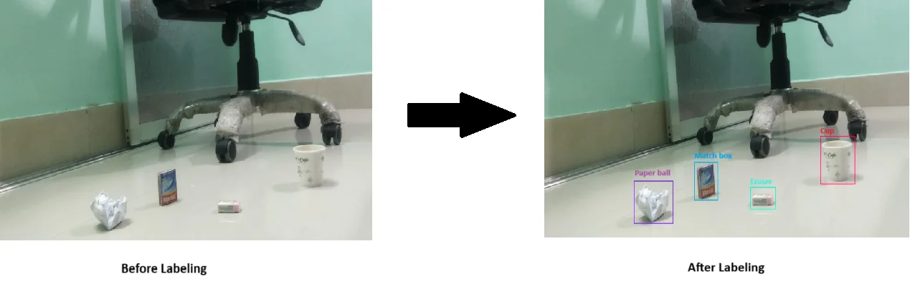
Independence for people with limited mobility.
Fetching misplaced items or delivering supplies can support daily tasks for people with disabilities, and reduce risk where manual handling is difficult or dangerous.
Automating repetitive and hazardous handling.
The same detect-grasp-transport loop applies to manufacturing, warehousing and logistics, improving workplace safety and throughput.
Less waste, lower energy use.
Adapted for sorting in recycling facilities or selective harvesting in precision agriculture. Low-power parts and open-source software support greener, repairable designs.
A hands-on platform for robotics + AI.
Bridges embedded systems, computer vision, control and machine learning on affordable hardware — making advanced projects reachable in resource-limited settings.
ML training used free GPUs and open-source tools.
Room mapping and path planning for autonomous navigation, plus voice commands for more natural human-robot interaction.
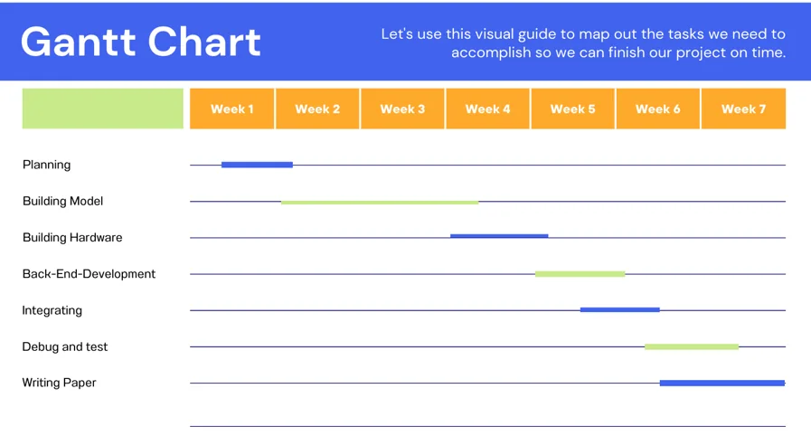
Senior Lecturer, Department of Electrical and Computer Engineering, North South University